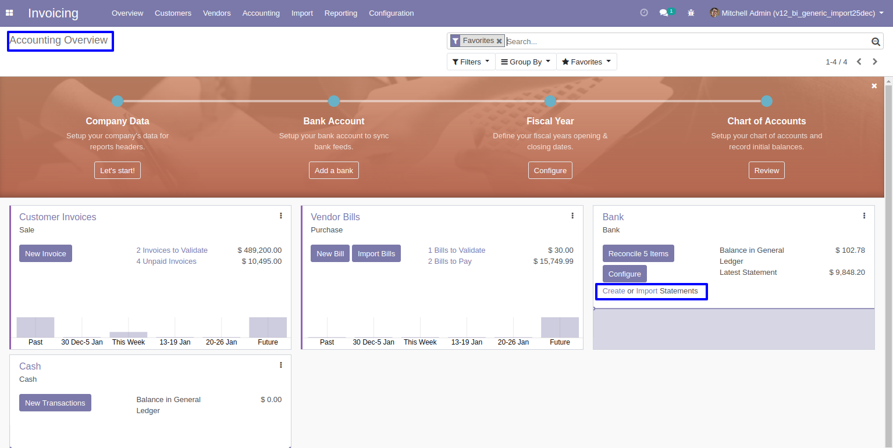
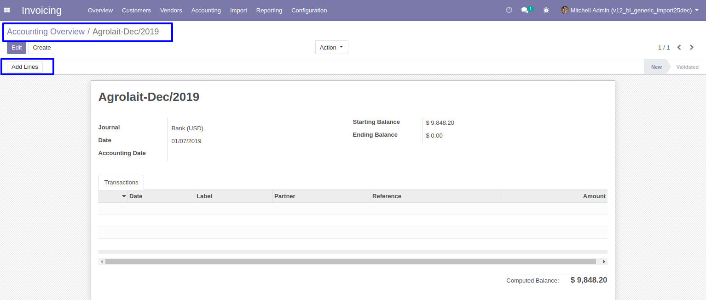
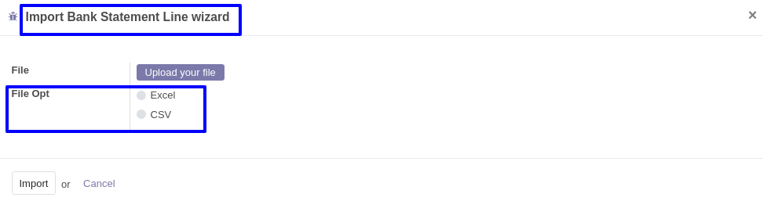
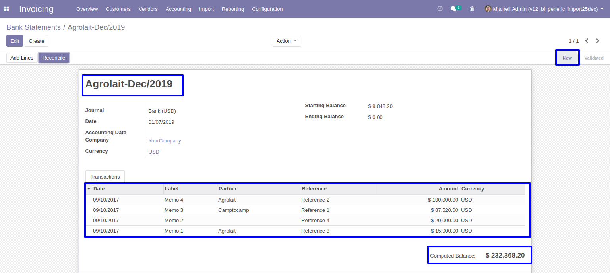

Importar lineas de extracto bancario
Muestra de archivo de datos.

Antes de instalar este modulo, debe instalar los siguientes paquetes en su sistema.
1.sudo pip install xlrd
2.sudo pip install xlwt
O
1.sudo apt-get install python-xlrd
2.sudo apt-get install python-xlwt
Importar lineas de extracto bancario
Muestra de archivo de datos.
Panel de contabilidad.
Haga clic en el enlace Crear estado de cuenta para crear un estado de cuenta bancaria.
Haga clic en el boton Agregar lineas para importar lineas de extracto bancario
Asistente para importar lineas de extracto bancario.
Si desea importar detalles de lineas de extractos bancarios desde CSV / XLS, tambien puede tener la opcion al respecto en el asistente de importación de lineas de extractos bancarios.
Importar vista de lineas de extracto bancario.
Despues de importar CSV / XLS, puede ver las lineas del extracto bancario importado en la pestana Transacciones.
Advertencia / Validacion.
1. Generara un error si no define el valor del campo Fecha al importar datos.
2. Generara un error si no define el valor del campo Memo al importar datos.